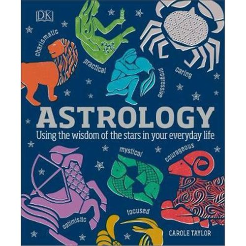
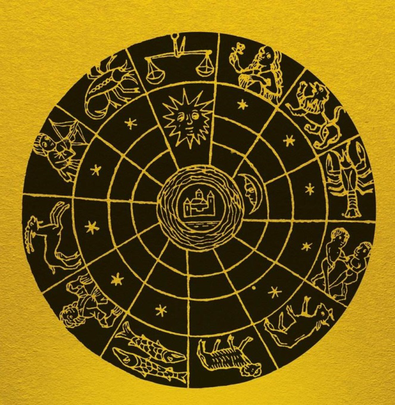

占星术Astrology
Welcome to My Astrology Website
Here you will find information about astrology-学习占星知识！.


星相学，或称占星术（ASTROLOGY），是星相学家观测天体，日月星辰的位置及其各种变化后，作出解释，来预测人世间的各种事物的一种方术。
星相学也是一个相对封闭的体系，主要采取的是太阳系内的行星，这种预测的考虑方式是取影响大多而明显的行星来预测，因此在大方向上有相当的可取性，但是在我们个体的生活中，变化太多，也就是涉及细节时是不可取的，可以作为指引人们生活工作总体方向取向的一种好方式，但细节上还需要通过个人努力去改变或创造，也同时体现出了良好的个人主动性，世界也才因此而大同小异。 星相学认为，天体，尤其是行星和星座，都以某种因果性或非偶然性的方式预示人间万物的变化。星相学的理论基础存在于公元前300年到公元300年大约600年间的古希腊哲学中，这种哲学将星相学和古美索不达米亚人的天体“预兆”结合起来，星相学家相信，某些天体的运动变化及其组合与地上的火，气，水，土四种元素的发生和消亡过程有特定的联系。这种联系的复杂性，正反映了变化多端的人类世界的复杂性。这种千变万化的人类世界还不能为世人所掌握，因此，星相学家的任何错误都很容易找到遁词。